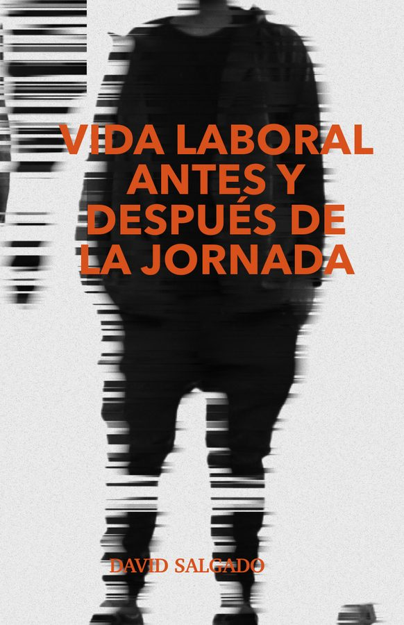
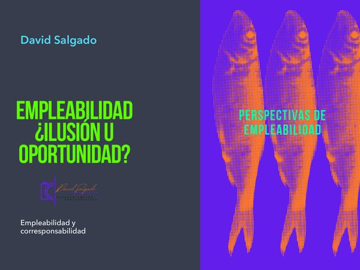
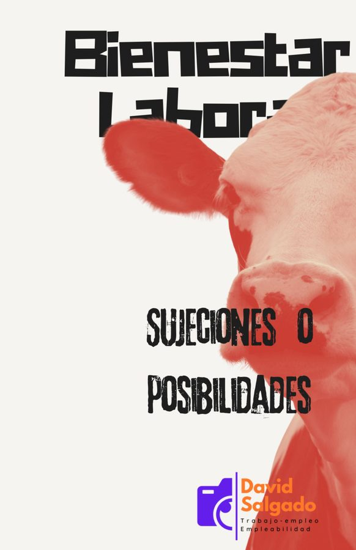

Acompaño a instituciones, empresas y comunidades a interpretar los cambios del trabajo desde una perspectiva etnográfica y cultural. Especializado en la intersección entre educación, inteligencia artificial y empleo en América Latina.
Servicios, portafolio y publicaciones — selecciona en el menú
Servicios y talleres
Consultoría, análisis etnográfico, capacitación y conferencias.
Publicaciones
Minilibros mensuales sobre trabajo, empleabilidad y vida laboral.
Portafolio y perfil
Investigaciones, ponencias, consultorías y especialidades.
Contacto y cotizador
Solicita una propuesta o cotiza tu proyecto en minutos.
Cuatro líneas de servicio orientadas a organizaciones, instituciones educativas y comunidades que buscan comprender y transformar el mundo del trabajo.
Proyectos de investigación sobre mercados laborales, empleo y transformaciones sociales.
Entregables
Metodologías cualitativas y narrativas para comprender cómo las personas viven y transforman el trabajo.
Entregables
Formación en inteligencia artificial, empleo, práctica educativa y nuevas dinámicas sociales.
Entregables
Charlas sobre el impacto de la IA, la virtualidad y los cambios laborales en América Latina.
Entregables
Conferencias disponibles
Formación práctica para educadores, líderes y agentes de cambio social.
Dinámicas y ejercicios para transformar la manera de comunicarse en entornos laborales y sociales.
Aprenderás: reconocer estilos de comunicación, aplicar escucha activa, generar confianza al expresarte y mejorar la negociación con colegas y equipos.
Claves prácticas para usar redes sociales, métricas y herramientas digitales en beneficio de proyectos sociales.
Aprenderás: manejar plataformas de analítica (Looker Studio, Meta Business Suite), diseñar narrativas digitales y medir el impacto de publicaciones.
Experiencia inmersiva para fortalecer el liderazgo desde la cooperación, la innovación y la inteligencia emocional.
Aprenderás: identificar tu estilo de liderazgo, potenciar equipos de alto desempeño y aplicar técnicas colaborativas para resolver problemas reales.
Mirada alternativa a la historia antigua y medieval para docentes que buscan conectar con adolescentes.
Aprenderás: desarrollar estrategias didácticas para enseñar historia con enfoque social, crítico y atractivo, usando ejemplos cercanos a la realidad de los jóvenes.
Metodología práctica para planear, gestionar y evaluar proyectos de manera clara y medible.
Aprenderás: formular objetivos claros, usar indicadores de impacto, aplicar metodologías ágiles (Kanban, Scrum) y comunicar resultados a financiadores.
Revisión práctica de herramientas digitales para optimizar tiempo, organización y colaboración.
Aprenderás: usar Notion, Trello, Asana, Slack y Google Workspace para planificar proyectos, delegar tareas y aumentar la productividad personal y de equipos.
Reflexión guiada sobre los cambios actuales y futuros en los mercados de trabajo.
Aprenderás: conocer las habilidades más demandadas, adaptarte a la automatización y la IA, construir un perfil atractivo en LinkedIn y mejorar tu empleabilidad.
Estrategias para que docentes integren herramientas digitales de manera efectiva en su enseñanza.
Aprenderás: crear contenidos visuales y narrativos, usar plataformas interactivas (Kahoot, Mentimeter, Canva) y generar un ambiente participativo en clases virtuales y presenciales.
Sesión práctica para explorar cómo la inteligencia artificial puede apoyar la enseñanza.
Aprenderás: usar aplicaciones de IA (ChatGPT, Perplexity, Gamma) para preparar clases, diseñar evaluaciones automáticas, generar materiales creativos y ahorrar tiempo docente.
Serie de reflexiones sobre trabajo, empleabilidad y vida laboral. Un nuevo minilibro cada mes. Descarga gratuita.

El trabajo no termina al cerrar la computadora. Reflexión desde la Antropología del Trabajo sobre la desconexión imposible y cómo el empleo moldea nuestra vida cotidiana.

La empleabilidad como fenómeno multifacético: dimensiones históricas, prácticas y culturales. ¿Oportunidad real o ilusión construida desde discursos dominantes?

¿La flexibilidad laboral es virtud o precarización encubierta? Análisis de las zonas grises donde el trabajo oscila entre sujeción y posibilidad.
Lo que no se nombra también existe. Estudio de las formas de violencia que pasan desapercibidas en las dinámicas laborales cotidianas.
Cada semana publico análisis, tendencias y reflexiones sobre trabajo, educación e inteligencia artificial en América Latina.
El trabajo no es solo lo que haces en 8 horas. Es lo que piensas al despertar, lo que sientes al salir, lo que cargas al llegar a casa. La frontera entre tiempo laboral y tiempo personal es más frágil de lo que creemos...
Leer en LinkedIn →¿La empleabilidad es una oportunidad o una ilusión? Cuando la miramos solo desde el esfuerzo individual, dejamos fuera el contexto y las estructuras que determinan el acceso real al trabajo...
Leer en LinkedIn →60 mil registros después, la pregunta sigue siendo la misma: ¿cómo se traduce toda esa información en comprensión real del mercado laboral? Los datos hacen el camino, las interpretaciones alumbran el rumbo...
Leer en LinkedIn →Red de Investigadores Latinoamericanos — REDILAT
Análisis de casi diez mil respuestas de usuarias/os de Conecta Empleo. Identifica perfiles, motivaciones y dinámicas de empleabilidad en México.
Ver publicación →UAM — Revista Reencuentro
Analiza cómo la pandemia aceleró la transformación educativa y laboral, evidenciando la necesidad de competencias híbridas en México.
Ver publicación →Religación Press
Reflexión sobre la influencia de los modelos de producción capitalista en la cultura del trabajo y las prácticas educativas contemporáneas.
Ver publicación →Universidad de Colima
Metodología de trabajo de calle y práctica social en la colonia Pensil. Intervención comunitaria con enfoque en orientación vocacional y empleabilidad.
Ver publicación →Monstritos AC
Diseño y evaluación de teoría de cambio y marco lógico. Proceso de recaudación de fondos con análisis de impacto social para bienestar socioemocional infantil.
Solicitar información →IPN · UAM · UPY · Servicio Nacional de Empleo
Habilidades para el Empleo (IPN) · Empleabilidad 4.0 (UPY) · VI Seminario Internacional de Juventudes en América Latina · Metodologías Ágiles (2022).
Invitar a conferencia →Egresado de la Escuela Nacional de Antropología e Historia (ENAH, México). Fundador de Sintropía Social, consultora de investigación social orientada a organizaciones civiles y empresas. Mi metodología integra la descripción densa geertziana con análisis cuantitativo aplicado.
Publicaciones académicasEscríbeme para explorar cómo podemos trabajar juntos. Respondo en menos de 48 horas.
Configura los parámetros y obtén una estimación orientativa. Sin compromiso. Precios en USD, referenciales.
Estimación orientativa
Consultoría en Investigación Social — Estándar
Estimación orientativa. El precio final depende del alcance, participantes, ubicación y condiciones del proyecto.
Solicitar propuesta formal →Tu navegador no puede mostrar el PDF aquí. Puedes descargarlo directamente.
Descargar PDF